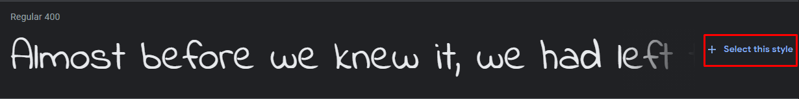
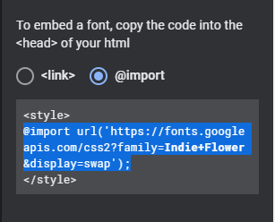
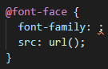
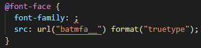
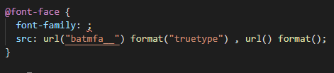
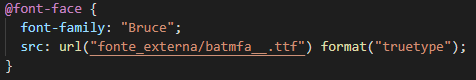

1.0 - Trabalhando com fontes do Google Fonts.
Sabemos que ao usar fontes pré embutidas do vscode ficamos um pouco limitados, já que não temos tantas variedades de fontes assim, então, para resolver esse problema, nós podemos usar o Google Fonts, lá você vai encontrar uma variedade de fontes para usar no seu site.
1.1 - Escolhendo uma fonte.
Ao entrar no Google Fonts você encontrará várias opções de fontes para usar no seu site, e após você encontrar sua fonte desejada, vamos lhe mostrar em como obter ela. Primeiramente você vai em "Select This Style"

Ao selecionar esta opção, basta ir no "embed", logo em seguida esolher a opção "@import" e copiar tudo o que está entre a tag "style" e colar dentro do VSCode

1.2 - Aplicando a fonte ao seu código HTML
Após fazer sua escolha de fonte para seu site e importar ela pra dentro do VSCode chegou a hora de aplicar ela dentro do seu codigo HTML, o que é muito simples, basta você escolher a tag do site na qual você deseja adicionar a fonte e adicionar o comando "Font-Family", após isso basta digitar o nome da fonte (É sempre bom lembrar que o nome da fonte deve estar entre parenteses ;) ).
ATENÇÃO: É necessário salientar que todas as importações de fontes DEVEM estar logo nas primeiras linhas da sua configuração de estilo seja ela externo ou interno. E uma outra importante dica é: Não abuse das fontes, o recomendado é que se use entre 3 a 4 fontes no seu site para que não acabe deixando tudo muito bagunçado.
2.0 - Trabalhando com fontes externas.
O Google Fonts é uma ótima opção para quem está atrás de fontes para usar em seu site, mas saiba que é possível ainda usar outras fontes externas, ou seja, de outros sites como por exemplo o DaFont. Pegando como base, o site DaFont, você pode escolher uma fonte desejada e baixa-la normalmente após isso basta extrair seu arquivo para ele gerar os arquivos OTF (OpenType) e TTF (TrueType) (OBS: Nem todas as fontes possuem esses dois arquivos, as vezes um pode possuir um formato e o outro não) após isso, basta copiar esses arquivos e colar dentro da pasta na qual você está criando o site.
2.1 - Configurando a fonte dentro do VSCode
Após copiar os arquivos OTF e TTF para dentro da pasta do seus site vamos agora criar o nosso seletor dentro da área voltada a configurações de estilos externos, o seletor para fontes externas se chama Font Face.

Dentro desse seletor você coloca o nome do arquivo no campo de url (De preferencia copie o nome do arquivo e cole na url para que não haja problemas):

foi usada uma fonte do Batman Forever como exemplo heheh
Além disso, é necessário adicionar uma configuração chamada "format" ao lado da url e antes do ponto e vírgula, onde você vai informar o tipo de formato da sua fonte entre aspas:

Caso você queira adicionar mais uma fonte externa ao seu site, basta colocar uma virgula e adicionar novamente o comando url

2.1.1 - Tipos de format():
Existem alguns tipos de formatos de fontes que é bom conhecer para não ficar perdido na hora de informa-los no campo format(), que são:
- opentype
- truetype
- embedded-opentype
- truetype-aat (aat = Apple Advanced Typography)
- svg
2.2 - Font-family para fontes externas
Existe um campo que ficou vazio até agora nas imagens de exemplos e esse campo é o font-family, que na verdade, para fontes externas você que vai criar um nome para a sua font-family, como foi usada uma fonte do batman como exemplo, usaremos o nome "Bruce" como nome hehe. Uma outra coisa que vale ressaltar é que: Geralmente costuma-se colocar os arquivos das fontes dentro de uma pasta separada só para elas dentro do seu projeto, nisso, você não vai conseguir usar a fonte no seu projeto até que você insira o diretório dela corretamente, exemplo, foi criada aqui uma pasta chamada "fonte_externa" e dentro dela esta o arquivo da fonte, então nesse caso o caminho para o acesso do arquivo ficou "fonte_externa/batmfa__.ttf", confira:

Acesse aqui o site que utilizou fonte do batman